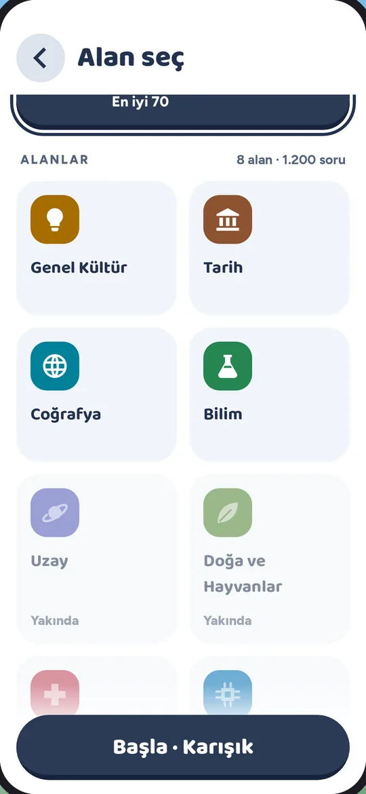
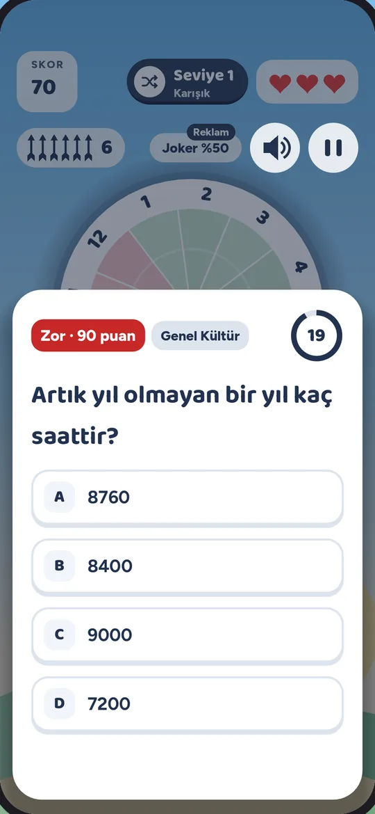
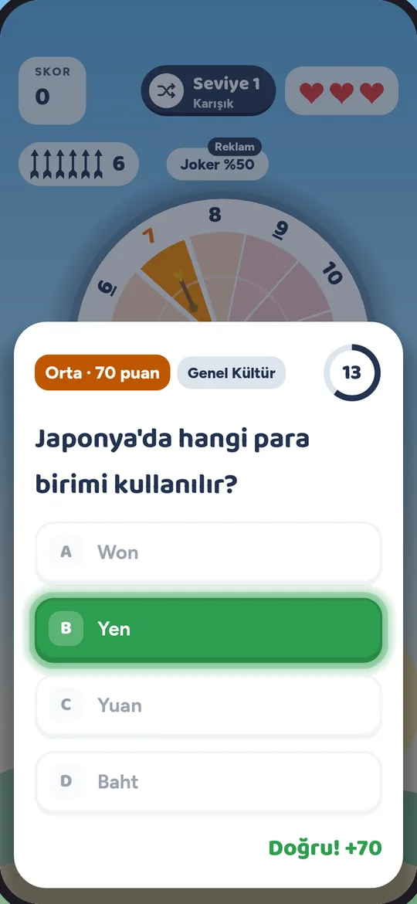
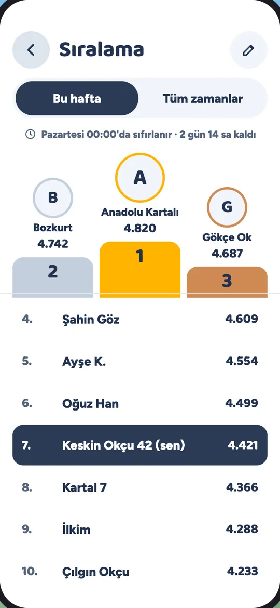

20 saniyede dört şıktan doğrusunu seç. Doğru cevap, sayı × 10 puan getirir. Yanlış cevap ya da biten süre üç canından birini götürür.
Sadağında 6 ok var. Iskalarsan bir ok gider; oklar biterse bir can gider ve sadak yeniden dolar. Zor dilimdeki (9-12) soruyu bilirsen sadağına 1 ok eklenir. Her 3 doğruda seviye atlarsın: sadak dolar, tahta hızlanır.
Özellikler
Kısa turlar, bol soru
8 alanla başla
Kolaydan zora 1.200 Türkçe soru. İstersen tek alan seç, istersen Karışık oyna. Yeni alanlar yolda.
Genel Kültür
Tarih
Coğrafya
Bilim
Sinema ve Dizi
Dil ve Deyimler
Spor
Yemek ve Mutfak
Yakında: Edebiyat, Doğa ve Hayvanlar, Müzik, Teknoloji ve daha fazlası.
Saate göre tema
Gökyüzü günün saatine uyar: gündüz mavi, akşamüstü gün batımı, gece yıldızlı.
GündüzGün batımıGece
Sıralama
Haftalık ve tüm zamanlar listesi. Hesap yok, sadece takma ad.
1.Anadolu Kartalı4.820
2.Bozkurt4.742
7.Sen4.421
İnternetsiz oyna
İndirdiğin sorular cihazında kalır. Çevrimdışıyken aldığın skor, bağlantı gelince sıralamaya gönderilir.
Takılınca yardım
Zor bir soru mu geldi? %50 Joker iki yanlış şıkkı siler. Canların bitince Devam et ile bir can alıp kaldığın yerden sürdürürsün. İkisi de istersen kısa bir reklamla açılır.
Ekranlar
Gündüz de gece de

Alanını seçGündüz
Nişan alGündüz

Soruyu bilGündüz

Puanı kapGündüz
Gece de oynaGece

SıralamaGündüz
SSS
Merak edilenler
Bil At! ücretsiz mi?
Evet. Oyun ücretsizdir ve reklamlarla desteklenir. Uygulama içi satın alma yoktur. Reklamı yalnızca sen seçince izlersin: oyun bitince Devam et ya da %50 Joker için.
İnternet olmadan oynanır mı?
Evet. Oyunla gelen sorular ve indirdiğin sorular cihazında kalır. Çevrimdışıyken aldığın skor, bağlantı gelince sıralamaya gönderilir.
Hesap açmam gerekiyor mu?
Hayır. Sıralamaya katılmak istersen sadece bir takma ad seçersin.
iPhone için var mı?
iPhone sürümü yakında App Store'da. Şimdilik Google Play'den Android için indirebilirsin.
Bir soruda hata buldum, ne yapayım?
destek@bilat.app adresine soruyu ve doğru cevabı yaz, düzeltelim.